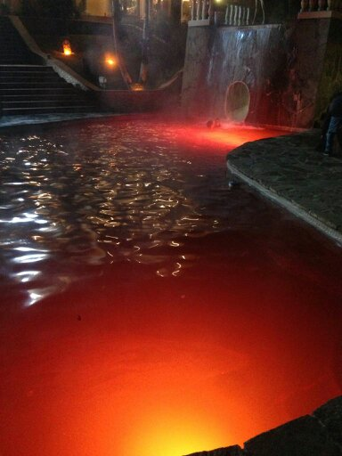

Welcome to the New Page Layout
This is the new body section. You can write about your projects, experiences, or anything else you'd like to share. The layout is clean, centered, and fully responsive.
Embedding media is straightforward. Here is an example of an embedded photograph that will automatically be styled to fit the page and match the video frame size.
You can also embed videos from sources like YouTube or Vimeo. Just paste the iframe embed code inside the 'video-wrapper' for a responsive, cinematic look.
Feel free to add more text, images, or videos as needed. The page will adjust accordingly.
If you would like to know more, explore my project drive, and send me an email.